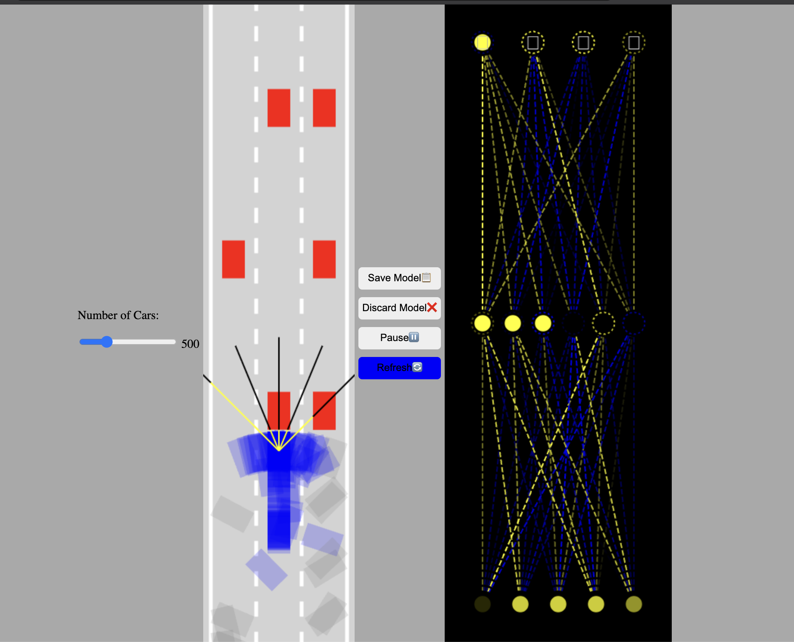

01 / JavaScript simulation
Self-Driving Car Simulation
A browser simulation built with vanilla JavaScript and Canvas. Ray sensors detect traffic and road boundaries, and a feed-forward neural network turns those readings into driving controls.
Adjust the number of cars, watch the lead car’s network in real time, and save its model in the browser. The next run tests mutated copies of that model against traffic.